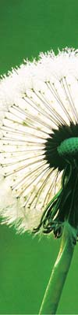

Muôn hoa đua sắc
 Đã là hoa thì hoa nào cũng đẹp. Kể từ những đoá hoa dân dã giản dị bình thường. Hoa sim, hoa mua tím biếc sườn đồi.
Hoa cà tím biếc vườn quê. Hoa lục bình tím biếc trên dòng sông. Hoa súng tím biếc ao làng. Hoa xoan tím biếc những chiều xóm vắng….
Hoa gạo đỏ đầu làng, hoa phượng đỏ trời góc phố. Hoa mào gà, hoa dong riềng đỏ góc vườn ai. Hoa cau, hoa dừa trắng phau lưng trời.
Những loài hoa dân giả muôn màu muôn sắc cũng đẹp huống chi là các loài hoa quý phái.
Đã là hoa thì hoa nào cũng đẹp. Kể từ những đoá hoa dân dã giản dị bình thường. Hoa sim, hoa mua tím biếc sườn đồi.
Hoa cà tím biếc vườn quê. Hoa lục bình tím biếc trên dòng sông. Hoa súng tím biếc ao làng. Hoa xoan tím biếc những chiều xóm vắng….
Hoa gạo đỏ đầu làng, hoa phượng đỏ trời góc phố. Hoa mào gà, hoa dong riềng đỏ góc vườn ai. Hoa cau, hoa dừa trắng phau lưng trời.
Những loài hoa dân giả muôn màu muôn sắc cũng đẹp huống chi là các loài hoa quý phái.
Một trong những loài hoa quý phái là hoa lan. "Vua thưởng lan, quan thưởng trà". Cái hương lan - " hương thuỷ quái gì mà mê đắm lòng người đến thế". Phong lan thơm sực nức, nồng nàn, gần gũi. Địa lan thanh cao, nhẹ nhõm, lúc thắm thiết, sực nức, lúc nhạt nhoà xa xăm. Đoá bạch ngọc khi nở có màu sáng như chiếc hài của thần vệ nữ tự ngày xưa.
Hoa mai có nhiều loài. Từ ngũ đài hoa - năm cánh vàng rực rỡ đến hoàng tỉ trên 30 cánh. Hoa mai đẹp từ gốc đến cành, sống lâu bền, xếp vào hàng cổ thụ "lão mai độc thọ nhất chi vinh" (thơ cổ). Hoa mai không phô sắc hương mà khiêm tốn dịu dàng, tượng trưng cho cốt cách của người quân tử, chịu được cái giá rét của mùa đông để nở vào một sớm xuân hồng.
Hoa cúc vàng trong hàng tứ quý " tùng, cúc, trúc, mai" tượng trưng cho mặt trời, cho quyền lực. Cúc đại đoá bông to, cành cong lộng lẫy sang trọng, cúc vạn thọ giản dị, bền lâu. Hoa cúc là loại "diệp bất li chi, hoa vô lạc địa", lá cúc không bao giờ rời khỏi cành dẫu đã héo khô, hoa tàn cánh rụng như người quân tử không xa rời lý tưởng
Loài hao mang biểu tượng của mùa xuân là hoa đào. Những cánh hoa đào rưng rưng khoe sắc, màu hồng phơn phớt hay hồng đậm xen trong lá non như vẻ e ấp ngại ngùng như người thiếu nữ. Hoa đào như muôn cánh bướm hồng rung rinh trong gió, khoe sắc trong nắng xuân.

Mã số


